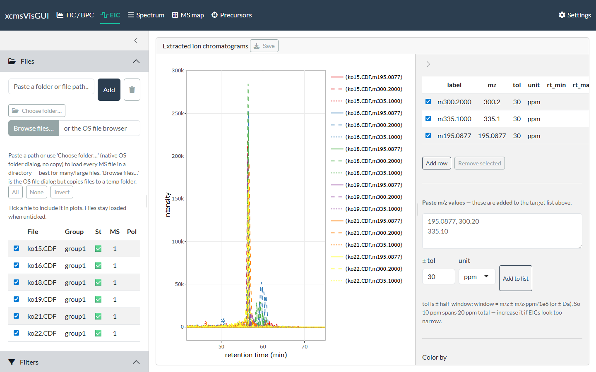
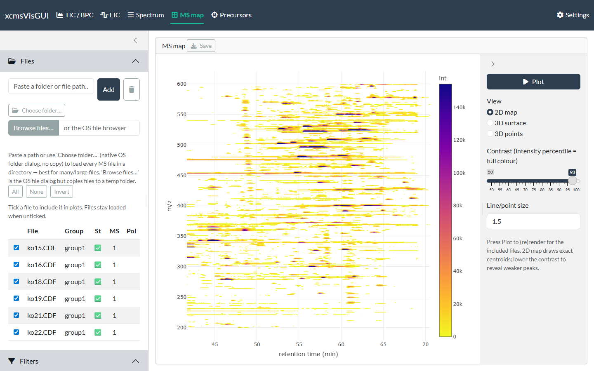
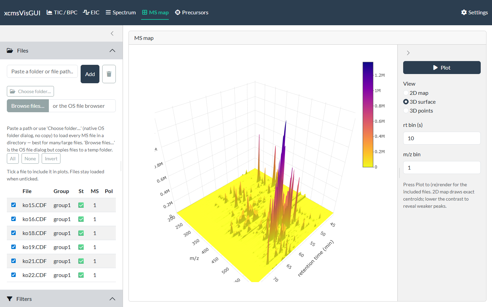
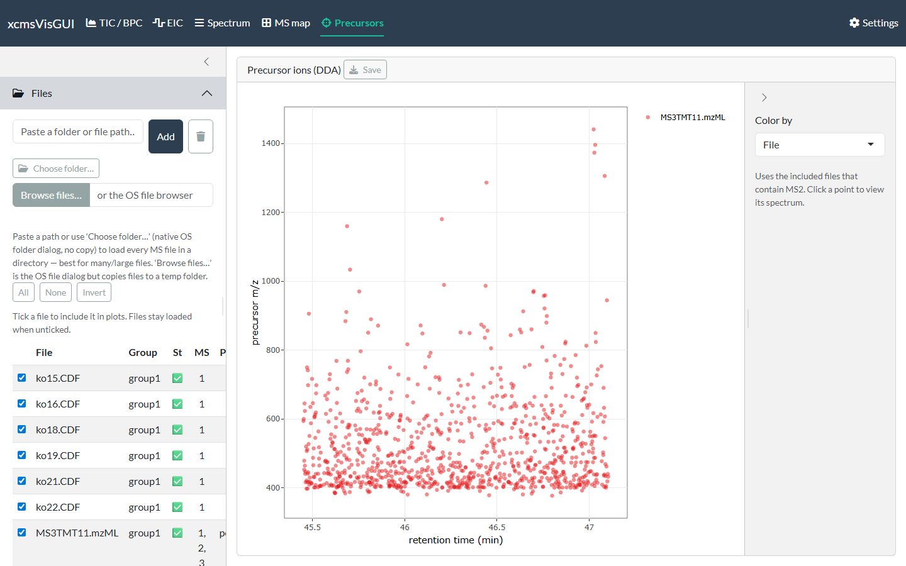

xcmsVisGUI is a local Shiny desktop app for exploring
raw LC-MS data interactively. This guide walks through
a typical session. The screenshots use the faahKO (6 CDF
files) and msdata demo datasets that ship with
Bioconductor.
Launch
The app is the exported function run_app():
# installed:
xcmsVisGUI::run_app()
# or from a clone (no install needed):
# Rscript run.RA browser tab opens with five plot views across the top (TIC/BPC, EIC, Spectrum, MS map, Precursors), a Settings page, and a left sidebar with Files and Filters.
1. Load files
Open the Files panel and add data three ways — all keep multi-GB files in place (no copy) except the OS file browser:
-
Paste a folder or file path and click
Add — loads every MS file in a folder
(
.mzML/.mzXML/.CDF). - Choose folder… — native OS folder dialog (Windows), no copy.
- Browse files… — the OS file dialog; note it copies the chosen files to a temp folder.
Files are read asynchronously (a status badge flips from ⏳ to ✅), so the UI stays responsive even with many files. Tick a file to include it in the plots — unticked files stay loaded. Use All / None / Invert for bulk selection. As soon as one file is included, the TIC renders:

2. Filter (optional)
The Filters panel applies globally to every view. Leave a box blank for no limit; retention-time boxes use the display unit (set in Settings) and the data range is shown as a hint.

You can constrain retention time, m/z, intensity, MS level, polarity, and (for vendor-specific subsetting) a spectrum-ID substring. Reset filters clears them.
3. TIC / BPC
The first tab overlays the total- (sum) or base-peak (max) chromatogram of every included file. Color by sample or sample group, optionally show data points, and click any trace to jump to that scan’s spectrum on the Spectrum tab.
4. EIC
Add extracted-ion chromatogram targets in the table (one row per m/z), or paste a list of m/z values and click Add to list. Tolerance is a ± half-window in ppm or Da (the default is set in Settings). Traces are overlaid across files and coloured by file, target, or group; Facet by file separates them.

5. Spectrum
Enter a retention time (or an acquisition scan number), or arrive here by clicking a chromatogram trace. Single file shows the clicked file; Facet / Stacked compare all included files at that retention time. Clicking a peak adds its m/z to the EIC target list.

The Scan list button opens a searchable table of every scan’s metadata (rt, MS level, polarity, precursor m/z, TIC, base peak, spectrum ID). Type in the filter boxes to narrow it, and click a row to load that scan.

6. MS map
A 2-D m/z × retention-time map of the included files. It draws exact centroids (no binning) with an mzMine-style contrast control — lower the contrast to reveal weaker peaks. Press Plot to render (gated so it never auto-extracts every file).

Switch the view to 3D surface or 3D points for a binned surface / scatter:

7. Precursors (DDA)
For data-dependent acquisition, this maps each fragmented precursor ion (retention time × precursor m/z) across the included MS2 files. Click a point to view its spectrum.

8. Settings
Settings persist across restarts (stored in your per-user config directory):
- Retention-time unit — minutes or seconds (applied everywhere; data is always handled in seconds internally).
- Palettes — ColorBrewer qualitative (traces/groups) and viridis/sequential (maps); the scale can be inverted.
- EIC defaults — default tolerance value and unit for new targets.
- Parallel readers — the mirai daemon-pool size for async file reading.
- Export defaults — format (png/svg/pdf), size, units, DPI.